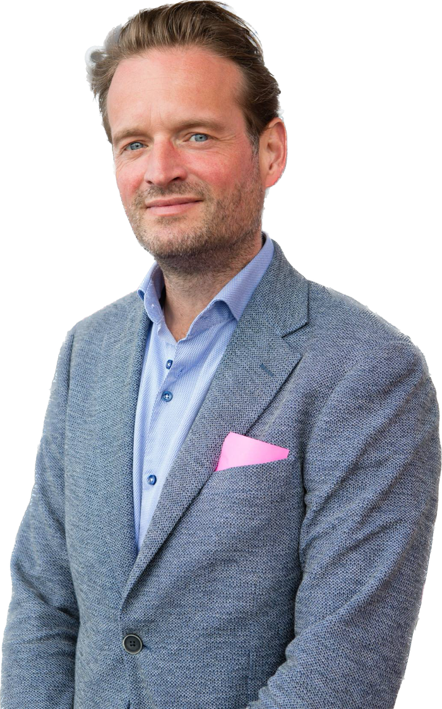

Bureau Gerritsma helpt besturen van organisaties op het snijvlak van vastgoed, technologie en verandering grip te krijgen op strategie, data en organisatie.

Strak proces. Slimme AI. Elke stap gecheckt. Softwareontwikkeling met AI: één werkwijze, review naar risico en governance die vastlegt wie waar tekent.
Eindverantwoordelijke rol bij complexe veranderopgaven: de opgave scherp maken, bestuur en uitvoering verbinden, en structuur brengen in de realisatie.
Meerjarige IT- en datastrategieën opstellen en realiseren, met aandacht voor de aansluiting tussen technologie, data, AI en organisatie.
Vastgoeddata, digitale processen en platforms, en de organisatieverandering die nodig is om daarmee te werken.
Initiatieven
Een matchplatform voor werk dat werkt via de persoonlijke AI-assistent van professionals, zoals ChatGPT, Claude of Le Chat. Geen cv invullen: de assistent maakt het profiel, de professional geeft akkoord. Werkgevers zien wat iemand kan, niet wie het is, tot de professional zelf contact deelt.
Bekijk legendmatch.nlRogier Gerritsma was CIO en Member of the Board bij Schouten & Nelissen, Area IT Manager bij DPG Media, en Managing Director bij MyChannels en TTY Internet Solutions. MyChannels en TTY eindigden allebei in een geslaagde verkoop: MyChannels aan DPG Media, en 2dehands.be aan eBay tijdens zijn tijd bij TTY.
Lees meer over RogierBenieuwd wat Bureau Gerritsma voor uw organisatie kan betekenen? Neem contact op.
Plan een gesprek